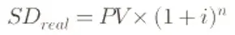

Introdução
O intervalo temporal entre a assinatura de uma Cédula de Crédito Bancário (CCB) e o efetivo pagamento da primeira prestação, comumente denominado "prazo de carência", é frequentemente comercializado pelas instituições financeiras como uma benesse ou um fôlego financeiro para o tomador do crédito. Todavia, sob a ótica da perícia financeira e estatística, esse hiato cronológico revela-se como uma das ferramentas mais eficazes para a elevação artificial e opaca do saldo devedor. No cenário atual, onde grandes bancos de varejo e instituições de médio porte competem agressivamente por fatias de mercado, a manipulação dos dias adicionais de carência tornou-se uma prática sistêmica que distorce o Custo Efetivo Total (CET) e retira do contrato a transparência exigida pelo ordenamento jurídico pátrio. O presente artigo disseca os mecanismos técnicos por trás dessa armadilha, demonstrando como a ineficiência — proposital ou sistêmica — na gestão das datas de vencimento compromete a integridade matemática das operações de crédito.
A Engenharia do Silêncio: O Intervalo entre a Assinatura e o Vencimento
A gênese da distorção financeira reside no período em que o capital já foi disponibilizado ao consumidor, mas a fase de amortização ainda não se iniciou. Matematicamente, o dinheiro possui um valor no tempo, e as instituições financeiras, sediadas em grandes centros de decisão, programam seus algoritmos para garantir que nem um único dia de exposição ao risco fique sem a respectiva remuneração. O problema jurídico e pericial surge quando este período de carência não é explicitamente detalhado no quadro resumo do contrato ou quando o cálculo dos juros remuneratórios desse intervalo é incorporado ao saldo devedor de forma capitalizada sem o conhecimento do devedor.
Diferente do que o senso comum sugere, a carência não interrompe a fluência dos juros; ela apenas posterga o pagamento do principal. Entretanto, na maioria das CCBs analisadas, observa-se que as instituições utilizam uma data de vencimento da primeira parcela que excede o padrão de 30 dias após a liberação. Esse "prazo elástico" — por vezes chegando a 45 ou 60 dias — é o vetor de uma capitalização de juros antecipada. Se o contrato não prevê de forma clara como esses dias adicionais serão remunerados, a instituição acaba por praticar o anatocismo na origem, pois os juros desses dias extras são somados ao capital para, somente então, calcular-se o valor das prestações pela Tabela Price.
A Tabela Price e o Desvio de Trajetória
O sistema de amortização francês, ou Tabela Price, pressupõe uma regularidade de intervalos e uma base de cálculo estática no momento inicial (PV). Quando a instituição financeira introduz dias adicionais de carência mal calculados, ela altera o valor de PV para um novo patamar, o qual denominamos na perícia como "Saldo Devedor Contaminado". A fórmula padrão de juros compostos aplicada nesse intervalo é:

Onde n representa a fração de meses ou o número de dias excedentes. O impacto dessa "pequena" correção inicial é devastador ao longo de 48 ou 60 meses. Ao iniciar a série de pagamentos com um saldo devedor inflado por juros de carência não pactuados de forma transparente, toda a trajetória de amortização é deslocada para cima. O consumidor passa a pagar juros sobre os juros que foram gerados antes mesmo da primeira fatura chegar às suas mãos. Em termos periciais, isso configura uma alteração no Custo Efetivo Total (CET) informado na assinatura, tornando-o uma peça de ficção contábil, uma vez que o custo real da operação é majorado pelo banco no processamento sistêmico do fluxo de caixa.
💻 O Olhar do Perito em TI:
Muitos sistemas bancários são programados para aplicar a capitalização diária durante a carência sem que isso apareça no extrato de evolução. Como especialista e profissional de TI por muitos anos, realizo a auditoria do código de cálculo para expor essa manipulação algorítmica.
Resultados Periciais: O Relato do Excesso Invisível
A investigação pericial sobre contratos de instituições financeiras de médio porte, muitas vezes operando com sistemas de TI menos flexíveis ou configurados para maximizar o spread diário, revela resultados numéricos contundentes. No caso estudado, a instituição financeira utilizou um intervalo de carência que não guardava relação com a taxa mensal informada no contrato, gerando um resíduo financeiro que se propagou por todas as parcelas subsequentes.
A tabela abaixo demonstra a evolução do saldo devedor e a diferença entre o cenário pactuado (transparente) e o cenário executado (com carência opaca):
| Evento Cronológico | Cenário Pactuado | Cenário Executado | Divergência |
|---|---|---|---|
| Assinatura | R$ 32.500,00 | R$ 32.500,00 | R$ 0,00 |
| Juros Carência | R$ 0,00 | R$ 310,45 | + R$ 310,45 |
| Saldo Deved. 1ªParc | R$ 32.500,00 | R$ 32.810,45 | + R$ 310,45 |
| Parcela (Price) | R$ 1.129,88 | R$ 1.250,64 | + R$ 120,76 |
| Custo Final | R$ 54.234,24 | R$ 60.030,72 | R$ 5.796,48 |
A análise do gráfico de divergência permite constatar que o erro de carência atua como um "pedágio inicial". O valor da parcela salta de R$ 1.129,88 para R$ 1.250,64 não apenas por um erro de cálculo direto na prestação, mas porque a base de cálculo foi corrompida no período de carência. A instituição financeira aproveita a vulnerabilidade técnica do consumidor para inserir datas de vencimento que favorecem o acúmulo de juros diários, muitas vezes ignorando feriados ou utilizando a convenção de dias corridos em detrimento do mês comercial de 30 dias quando isso lhe é mais lucrativo.
Fundamentação Jurídica: O Anatocismo na Origem e a Falta de Transparência
A prática de capitalizar juros durante a carência sem previsão contratual clara e destacada afronta o Código de Defesa do Consumidor (CDC) em seus pilares mais básicos: o direito à informação adequada e a proteção contra cláusulas abusivas (Art. 6º, III e Art. 51, IV). O Superior Tribunal de Justiça (STJ), através da Súmula 539, permite a capitalização de juros desde que expressamente pactuada. Contudo, a incidência de juros sobre o saldo devedor durante a carência, sem que o valor exato desse encargo esteja refletido no CET, configura uma pactuação obscura ou inexistente.
Do ponto de vista do Código Civil, a imposição de datas de vencimento que geram um ônus excessivo sem contrapartida de informação fere a boa-fé objetiva. O magistrado, ao deparar-se com uma perícia que demonstra o aumento do saldo devedor antes do primeiro pagamento, deve reconhecer que houve uma alteração unilateral das bases do contrato. Se o banco informa uma taxa mensal, mas na prática aplica uma taxa diária capitalizada durante a carência para inflar o principal, ele está praticando o que a doutrina moderna chama de "anatocismo de origem", uma manobra que visa burlar o teto das taxas informadas e mascarar o custo real do dinheiro.
Recomendações para a Atuação Processual
Para advogados e operadores do direito, a recomendação estratégica é a exigência da exibição dos "extratos de evolução do saldo devedor" desde a data da assinatura, e não apenas a partir da primeira parcela. É no intervalo zero que se escondem os maiores desvios. É imperativo questionar a instituição financeira sobre a metodologia de cálculo dos juros de carência: se foi utilizado juro simples ou composto e se esse montante foi incorporado ao principal para fins de cálculo da prestação.
Aos juízes e promotores, orienta-se o olhar crítico para as datas de vencimento. Muitas vezes, o banco oferece "60 dias para começar a pagar", mas não avisa que esses 60 dias custarão, ao final do contrato, o equivalente a três ou quatro parcelas adicionais em juros escondidos. A perícia técnica é a única ferramenta capaz de isolar o custo dessa carência e devolvê-lo ao devedor através do recálculo da trajetória de amortização, expurgando o que não foi cristalinamente pactuado.
Conclusão: A Perícia como Escudo contra a Opacidade Bancária
A "Armadilha da Carência" é um exemplo sofisticado de como a técnica financeira pode ser utilizada para criar assimetrias informacionais. O que parece ser um benefício temporal é, na verdade, um acelerador de dívida que opera no escuro, longe da compreensão do cidadão comum e até mesmo de muitos profissionais do direito. A diferença apurada de quase R$ 6.000,00 em um contrato de porte médio é o testemunho silencioso de uma gestão bancária que prioriza a margem de lucro em detrimento da exatidão contratual.
A perícia técnica conduzida por Lincoln Sposito utiliza ferramentas de Data Science e um rigor estatístico profundo para traduzir esses erros sistêmicos em evidências jurídicas incontestáveis. Ao reconstruir cada dia do fluxo de caixa e confrontar as datas de vencimento com a matemática financeira pura, o trabalho pericial garante o reequilíbrio financeiro do contrato. A justiça econômica só é plenamente alcançada quando a verdade dos números prevalece sobre a conveniência dos algoritmos bancários, assegurando que cada centavo cobrado possua um lastro ético, jurídico e matemático inquestionável.